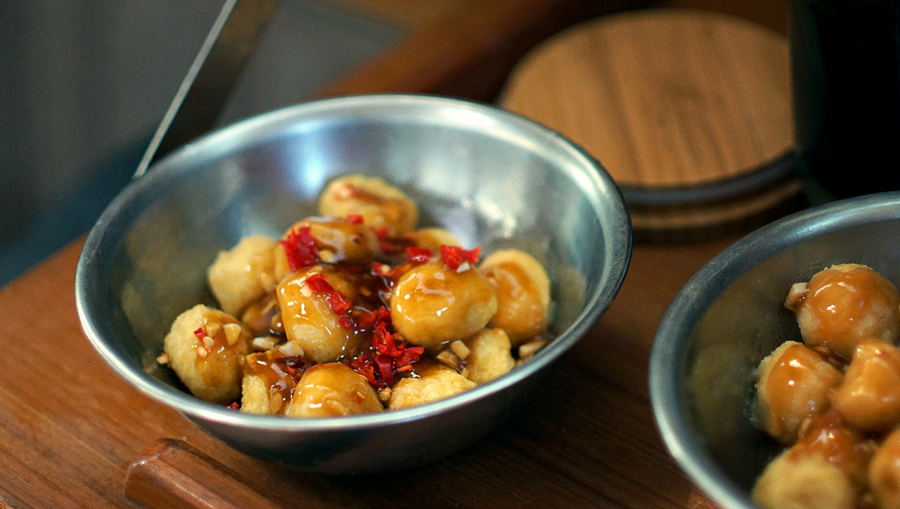

corn dumplings
2 people — 40 minutes
I found an old vegetarian cookbook in a book-sharing shelf. I must have spent an hour reading through it, the recipes were fantastic, the title read "The Farm Vegetarian Cookbook". The cookbook had an entire section dedicated to cooking with corn. It's in there that I found a recipe for masa dumplings.
Masa is corn that is simmered and ground into a paste and is the base for many recipes. You can make Mexican-style tortillas with it, that, or you can use it to make dumplings! I don't have access to fresh corn, nor do I have the space or the time to make my own masa, but I used corn semolina instead and it worked! The only difference is that you need to add boiling water so you can roll the mixture into balls. If you were to use masa, you wouldn't need the added moisture.
The texture of the dumplings is fun and chewy. The outside is soft, but the inside is like that of dense cornbread.
Recommendations:
Devine & I enjoy eating it with tomato sauce or with a spicy apricot sauce. Instead of apricot jam, you can add apricot juice to the mix (orange will taste wonderful too). I added jam because I didn't have any juice on the boat, and besides, it works well in this recipe.
Adding extra spices, like cumin, chili flakes and turmeric will add a nice flavor to the dumpling mix.
 corn semolina160 g
corn semolina160 g all purpose flour30 g
all purpose flour30 g baking soda2.5 g
baking soda2.5 g baking powder5 g
baking powder5 g salt1.25 g
salt1.25 g water250 ml, boiled
water250 ml, boiled
dumplings
- Mix 160g (1 cup) corn semolina, 30 g (1/4 cup) all purpose flour, 2.5 g (1/2 tsp) baking soda, 5 g (1 tsp) baking powder, and 1.25 g (1/4 tsp) of salt. Stir until well mixed.
- Bring 240 ml (1 cup) of water to a boil, pour into dry ingredients and mix well. When the dough is wet and sticky, form roughly 13mm balls with your hands. You can make larger or smaller balls - note that cooking time will change if the diameter is bigger.
- Bring a big pot of water to a boil, add corn balls and boil for 10-15 minutes.
- Drain, let cool.
 apricot jam15 g
apricot jam15 g soy sauce30 ml
soy sauce30 ml japanese rice vinegar30 ml
japanese rice vinegar30 ml lemon juice15 ml
lemon juice15 ml sesame oil5 ml
sesame oil5 ml- water60 ml
 chili pepper flakes15 g
chili pepper flakes15 g ginger root5 ml
ginger root5 ml garlic2, minced
garlic2, minced arrowroot starch5 g
arrowroot starch5 g
sauce
- Mix all sauce ingredients together (all, except the arrowroot starch).
- Put 5 g (1 tsp) of arrowroot starch in a bowl, and dissolve in 60 ml (1/4 cup) of water. Set aside.
- Pour sauce into a pan, and bring to medium heat. Once the sauce starts to boil, add a few spoonfuls of the arrowroot starch mix to thicken the sauce. Once thickened, divide corn dumplings into bowls and pour sauce overtop.